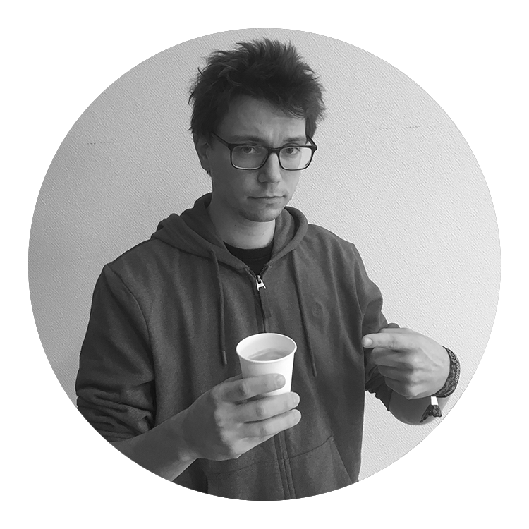
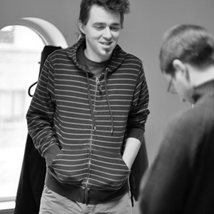

Web & Mobile Server-side
[OGI03q]
00. Cursusintro
Docenten W&MSS
P. Van Peteghem

L. De Cock
M. De Schoenmacker

J. Maervoet
Over deze interactieve slides
Gecodeerd in
reveal.js
Werkende PHP-codefragmenten indien gestart met Docker
Installatie-instructies:
github.com/mjoris/workshops-wmss
Update regelmatig!